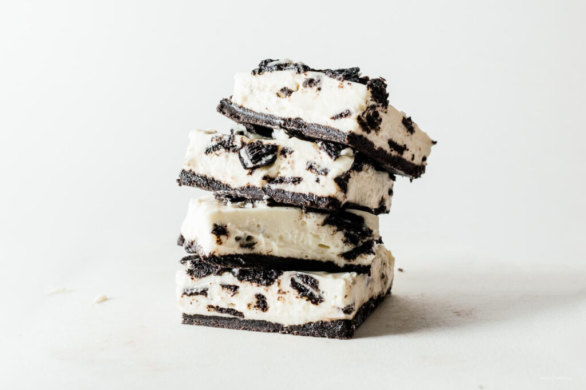

Small Batch No Bake Oreo Cheesecake Recipe

INGREDIENTS
- 10 oreos
- 1 tbsp butter melted
- 100 grams cream cheese room temp, about 1/2 cup
- 100 grams heavy cream about 1/2 cup
- 1/4 tsp vanilla optional
- 2 tbsp sugar
INSTRUCTION
- Use a food processor to crush 6 oreos into fine crumbs. Alternatively, use a ziplock bag and crush until fine. Mix together with 1 tablespoon melted butter then press into a small loaf pan (I used a small square pan) and refrigerate for 10 minutes while you make the filling in the next step.
- In a small mixing bowl, whip the cream cheese until smooth. Add the heavy cream, vanilla, and sugar, beating until well combined. Break up 2-3 oreos into chunks and fold into the cream cheese mix.
- Pour the filling over the chilled cookie crust and spread evenly. Add some crushed oreos on top, if desired.
- Freeze for 1-2 hours or until set. Cut into squares and enjoy! You can keep these either in the fridge or the freezer once sliced - the freezer version tastes more ice cream-y and the fridge version tastes more creamy and like regular cheese cake.
GO TO RECIPEES